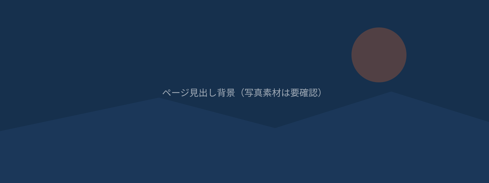

AIO / GEO
AIO/GEO対応について
「検索されるサイト」から「AIに選ばれるサイト」へ。生成AIの回答の中に、自社の情報が正しく登場するための対策です。
「検索されるサイト」から「AIに選ばれるサイト」へ
これまでのホームページ制作は、Googleなどの検索結果で上位に表示される「SEO対策」が中心でした。しかし今、検索の主役はGoogle検索だけではなくなっています。ChatGPTやGoogleのAI Overview、Perplexity、Copilotといった生成AIに「〇〇 会社 おすすめ」「〇〇市 リフォーム 業者」のように質問し、AIがまとめた回答を見て意思決定する人が急速に増えています。
Promeon Webでは、こうしたAIの回答の中に自社が「引用・紹介される」ための対策を「AIO（AI Optimization）／GEO（Generative Engine Optimization）対応」として、サイト制作に標準で組み込んでいます。
AIO/GEOとは
呼び方は複数ありますが、目的は共通しています。「人がAIに質問したとき、その回答の中に自社の情報が正しく登場するようにする」ことです。
AIO（AI Optimization）
AIが提供する検索体験（Google AI Overview など）に、自社の情報が表示されやすくするための最適化のことです。
GEO（Generative Engine Optimization）
ChatGPTやPerplexityのような生成AIが回答を作成する際に、その情報源として自社サイトが引用されやすくするための最適化を指します。
SEOとの違い
SEOとAIO/GEOは対立するものではなく、目指すゴールが異なります。
SEO（検索エンジン最適化）
Googleなどの検索結果一覧（青いリンクが並ぶページ）で、自社サイトを上位に表示させることが目的です。ユーザーは検索結果の中から自分でサイトを選んでクリックします。
AIO/GEO（生成AI最適化）
検索結果一覧を経由せず、AIが生成した「回答文」の中に自社の名前や情報が直接引用されることが目的です。ユーザーはクリックする前に、すでにAIの回答から会社名やサービス内容を知ることになります。
つまりSEOが「一覧の中で選ばれる工夫」だとすれば、AIO/GEOは「AIの回答そのものに答えとして採用される工夫」です。今後は両方の対策が揃って初めて、検索でもAIでも見つけてもらえるサイトになります。
どのように対策していくか
Promeon Webでは、以下の施策をサイト制作の標準工程に組み込んでいます。
構造化データの実装
会社名・住所・電話番号・営業時間・提供サービスなどの情報を、Googleや生成AIが正確に読み取れる形式（schema.org 等の構造化データ）でページ内に埋め込みます。AIは構造化された情報ほど信頼して引用しやすくなります。
FAQ形式のQ&Aコンテンツ
「よくある質問」を明確な質問文と回答文のセットで掲載します。生成AIはQ&A形式の文章を回答の元ネタとして引用しやすい傾向があるため、想定される質問に対して簡潔で的確な答えを用意します。
引用されやすい文章構成
段落の冒頭で結論を述べ、根拠や具体例を後に続ける構成にします。あいまいな表現や長い前置きを避け、AIが回答として抜き出しやすい「一文で完結する事実・定義」を意識して文章を作成します。
企業情報の一貫性（NAP整合性）
会社名・住所・電話番号などの表記を、サイト内はもちろん、Googleビジネスプロフィールや求人媒体、SNSなど社外の掲載先とも統一します。表記のゆらぎがあると、AIがどの情報を正としてよいか判断しづらくなり、引用の信頼度が下がります。
専門性・実績の明示（E-E-A-T対策）
実績、資格、対応エリア、施工事例、利用者の声などを具体的に掲載し、「実際に事業を行っている、信頼できる情報源である」ことをAIにも人にも伝わる形で示します。
Promeon Webでの提供方法
上記のAIO/GEO対策は、Mini／Standard／Proいずれの制作プランにも標準搭載しています。追加料金なしで、構造化データの設置・FAQコンテンツの設計・引用されやすい文章構成での原稿作成・企業情報の一貫性チェックまでを行います。
検索エンジンにもAIにも見つけてもらえるサイトづくりを、制作の最初の段階から設計します。
※ AIO／GEOは新しい分野であり、特定のAIサービスでの表示・引用を保証するものではありません。プランごとの具体的な実装項目・範囲はお見積り時にご確認ください（要確認）。
AIにも見つけてもらえるサイトを
「いまのサイトがAIにどう扱われているか知りたい」「これから作るサイトで対応したい」など、どんな段階でもご相談ください。ご相談・お見積りは無料です。